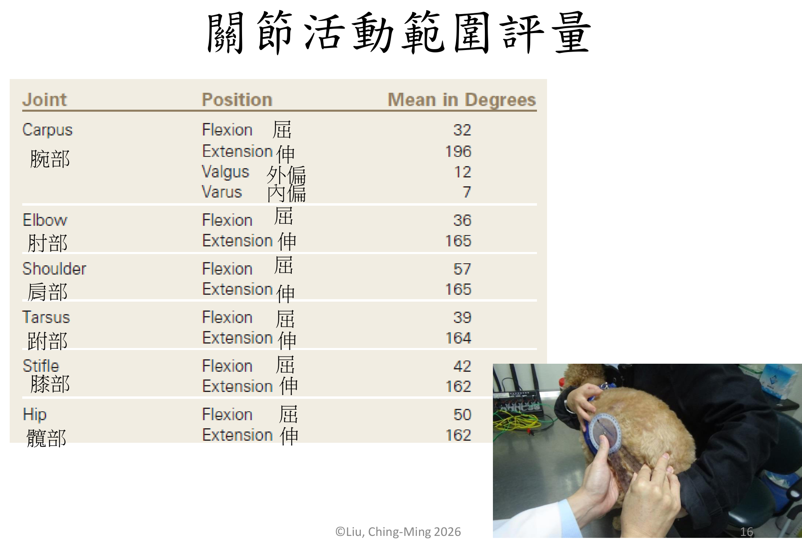
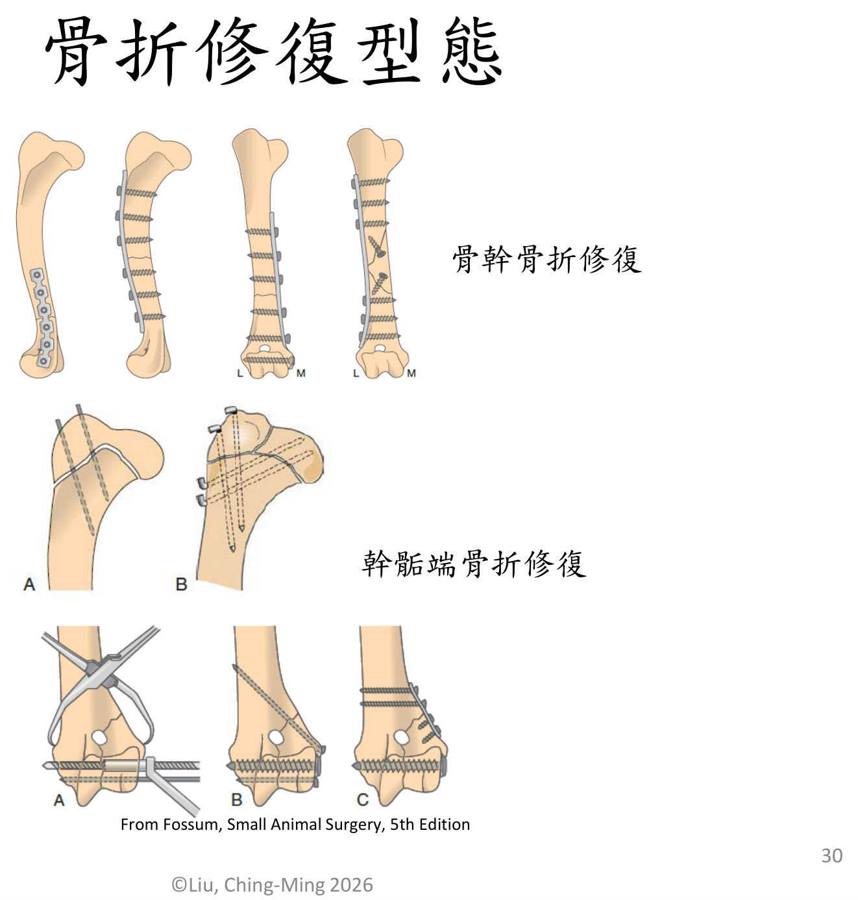
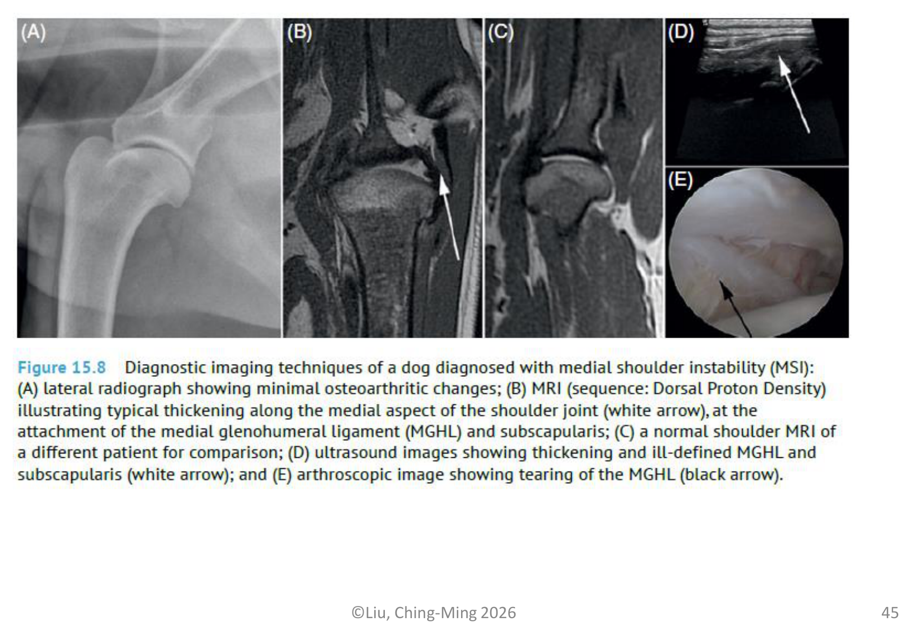
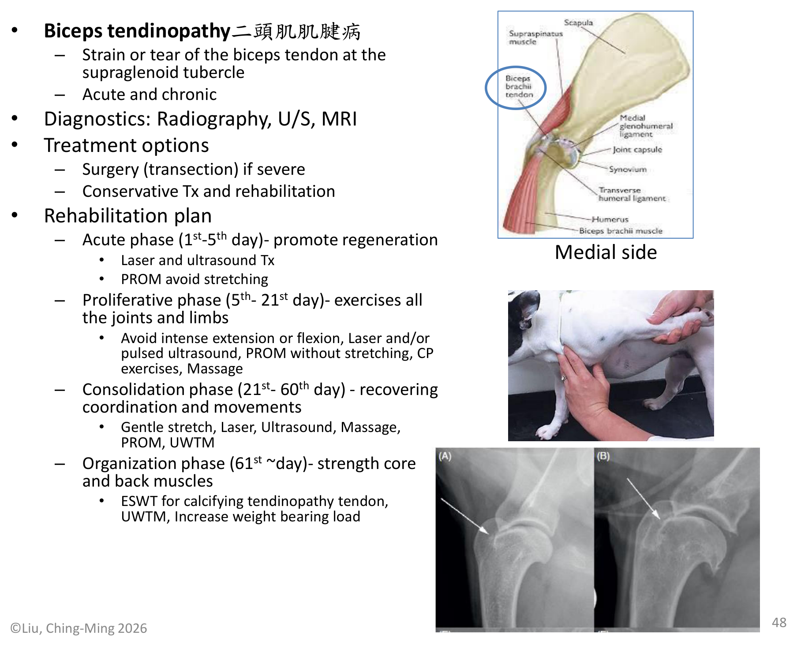
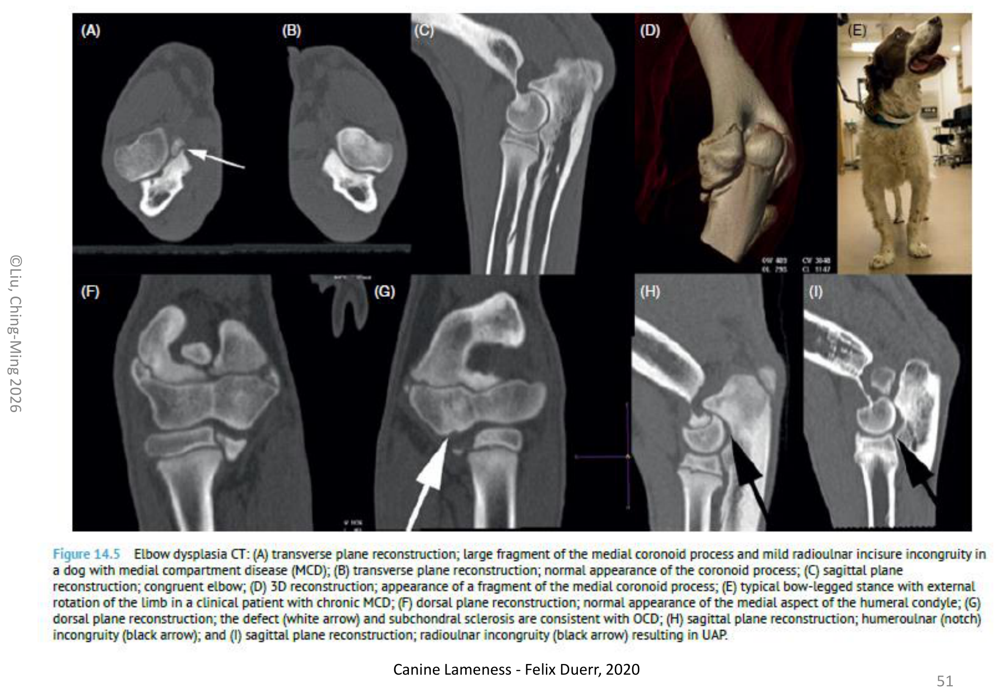
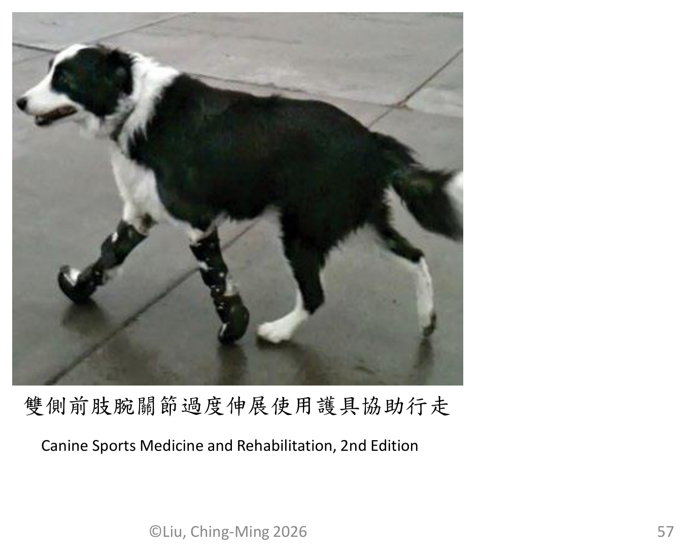
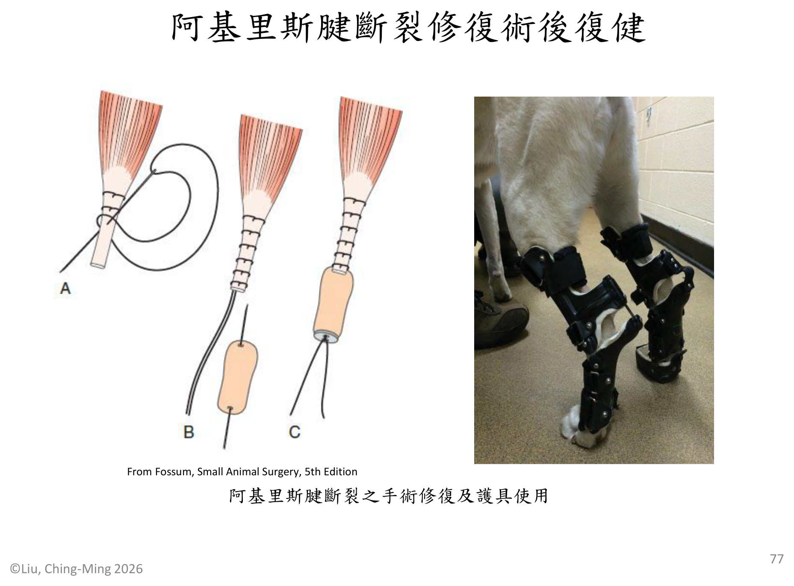
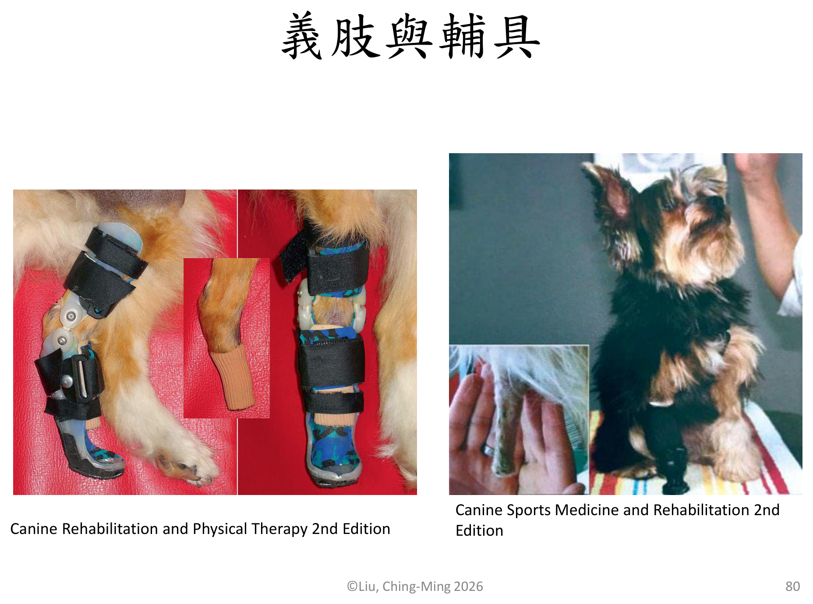

重點摘要
這份講義的架構跟上一份神經科疾病復健講義完全平行——一樣分「總論 General」與「各論 Individual」，一樣套用同一套急性期（1-5天）→增生期（5-21天）→鞏固期（21-60天）→組織期（61天以後）四階段復健框架。差別在於這份講義處理的是骨科：總論先講疼痛評估量表、各種物理治療儀器（冰熱敷、針灸、雷射、TENS、超音波）的原理與用法，再講關節活動、肌肉萎縮、本體感覺、核心肌群這幾個復健的共同目標；各論則先建立骨折修復的復健原則，再依「前肢」「後肢」逐一整理十幾種常見關節、肌肉、韌帶、肌腱疾病的診斷與分期復健方案，最後是截肢術後復健與義肢輔具。
由於幾乎每個疾病都套用同一套四階段框架，只是每階段放入的具體治療項目不同，這頁把共同的框架抽出來獨立整理（骨折修復章節），各論每個疾病則聚焦在「跟框架不一樣、需要特別注意」的地方，並保留幾個講義中最完整的日/週治療時間表當作範例，不會逐一列出十幾張幾乎重複的表格。
評估量表＋7種物理治療模式
四階段框架的完整範例
7種肩肘腕關節與肌腱疾病
6種髖膝跗關節與韌帶疾病
- 四階段復健框架是這份講義（也是整個復健科）的核心邏輯：急性期以疼痛控制與消腫為主、盡量避免主動運動；增生期開始活動所有關節與肢體但避免過度伸展；鞏固期恢復協調性與動作模式；組織期則著重核心與背部肌力強化。幾乎每個骨科疾病的復健方案都是把這套框架套在該疾病的解剖部位上。
- 骨折病患復健的「三不一要」最容易被忽略：初期勿過度操作（防止植入物鬆脫）、勿過度關籠（避免延遲癒合、關節攣縮、肌肉萎縮）、傷口未癒合勿水療浸水（防感染），要盡量使用拉帶／胸拉等輔具協助行走。
- 跛足評估量表（0-5級）與疼痛評估量表是骨科復健的共同語言：0分正常步態，5分完全無法負重；這與神經科疾病復健用的癱瘓分級系統是平行但不同的兩套分級工具，臨床上不要混用。
- 前十字韌帶斷裂（CCL rupture）是小動物骨科最常見的疾病之一，臨床特徵是後肢跛足合併屈膝內轉（stifle hyperextension and internal rotation）、抽屜試驗（drawer test）陽性，手術選項多（囊外法、TPLO、TTA、CBLO），復健重點是避免過度伸展與旋轉膝關節。
- 髖關節發育不良的復健方案依手術方式（FHNO vs. THR）明顯不同：股骨頭頸切除術（FHNO）後可以較積極介入髖關節伸展運動；全髖關節置換（THR）術後則需嚴格控制走動與姿勢、避免內收外展以防脫臼，是這份講義中少數「手術方式不同、復健策略方向也不同」的例子。
疼痛評估與物理治療模式 Pain Assessment & Physical Modalities
骨科復健的第一步永遠是評估——先量化疼痛與跛足程度，才能判斷治療是否有效；接著才是講義列出的七種物理治療工具，各有各的原理與適應時機。
疼痛與跛足評估量表
常用 VAS（visual analogue scale，疼痛視覺模擬量表）與 Colorado Canine Acute Pain Scale，依行為表現、對碰觸的反應、身體緊張度分級，從「休息時安心舒適」到「碰觸痛處反應激烈攻擊人、身體僵硬盡量避免疼痛活動」共分多個等級，中至重度疼痛需再評估止痛計畫。
| 0 | 正常步態 |
| 1 | 輕度間歇式跛足（偶而） |
| 2 | 中度跛足，正常步距，部分負重 |
| 3 | 中度跛足，步距變短，部分負重 |
| 4 | 嚴重跛足腳趾點地，肢體少用 |
| 5 | 跛足無法負重 |
骨科術後常用止痛劑
| 分類 | 藥物 |
|---|---|
| NSAIDs 非類固醇消炎劑 | Carprofen（Novox® / Rimadyl® 猛力） |
| Deracoxib（Deramaxx®） | |
| Firocoxib（Previcox® 骨克疼） | |
| Meloxicam | |
| Gabapentin | 神經痛阻斷劑 |
七種物理治療模式 Physical Modalities
| 模式 | 原理 | 使用重點 |
|---|---|---|
| 冰敷 Cryotherapy | 血管收縮、降低血流量、減少腫脹與組織繼續分解 | 創傷後72小時內（癒合增生期前）使用最有效，每日3-4次每次15-20分鐘，局部淺層約達1-4公分深，應避免凍傷、需隔絕保護 |
| 熱敷 Thermal Therapy | 血管擴張、增加血液循環、放鬆肌肉、增加軟組織伸展性 | 組織達增生期及重建期使用（創傷後72小時後），每日3-4次每次15-30分鐘，預計增溫2-4°C，應避免燙傷超過45°C |
| 針灸 Acupuncture | 疼痛控制門戶理論、腦內啡釋放、穴道與經絡 | 局部穴位、平衡穴位；方式有乾針、電針 |
| 雷射 Laser | 提供細胞粒線體能量、促進癒合與組織修復 | 點對點或掃面積方式，以總能量（焦耳）計算劑量 |
| TENS 經皮神經電刺激 | 疼痛控制門戶理論、特定頻率電流刺激釋放腦內啡 | 急性痛用高頻（50-150Hz）、慢性痛用低頻（<50Hz）；另有干擾波（IFC）、調製波（premod） |
| 治療超音波 Therapeutic Ultrasound | 細胞按摩、深層熱敷、促進組織修復 | 脈衝式（pulsed）或連續式（continuous）；1.0MHz穿透較深、3.3MHz較淺層 |
| NMES 神經肌肉電刺激 | 電流刺激肌肉收縮，對抗肌肉萎縮 | 伸肌與屈肌可交替刺激或同時伸屈，詳見下節肌肉萎縮復健 |
急性發炎期應避免使用 TENS；冰敷與熱敷的分界點大致是「創傷後72小時」——之前用冰敷消腫止痛，之後改熱敷促進循環與癒合，這個時間軸在後面每個疾病的分期治療表中都會重複出現。
關節、肌肉、本體感覺與核心復健 Joint, Muscle, Proprioception & Core
這節是骨科復健的四大共同目標，之後每個疾病的復健方案，本質上都是從這四塊裡挑選合適的項目組合而成。
關節活動復健
PROM（passive range of motion，被動式關節活動）與 AROM（active range of motion，主動式關節活動）是最基礎的兩種方式，進階則有運動復健（therapeutic exercises）如坐與站（sit to stand）、橫桿跨越（cavaletti rails）、挖掘（digging），以及UWTM（underwater treadmill，水中跑步機）。

關節囊膜（joint capsule）外層為纖維組織負責力學穩固，內層含血管叢，A型滑液膜細胞具吞噬作用、B型滑液膜細胞分泌玻尿酸潤滑；關節囊有兩種本體感受體：Ruffini Endings（感知關節動作）與 Pacinian Corpuscles（感知關節體位及動作），疼痛感受體為 Free Nerve Endings，韌帶上的本體感受體則是 Golgi Tendon Organs。
肌肉萎縮復健
原理：促進血液與淋巴循環、刺激肌肉活性。四種手法：Effleurage（輕撫法，平行肌肉纖維向心輕撫）、Petrissage（揉捏法，垂直肌肉纖維揉捏）、Tapotement（扣撫法，敲擊刺激肌肉）、Cross-friction（交錯摩擦法）。
電流刺激肌肉收縮，方式可為伸肌與屈肌交替，或同時伸屈；常用於術後早期肌肉尚無法主動收縮時維持肌肉量。
運動治療 Therapeutic Exercises依收縮型態分兩類：等長收縮（isometric contracture）鍛鍊肌肉量（如肢體載重物、平衡板訓練）；等張收縮（isotonic contracture）鍛鍊肌力，再分向心收縮（concentric，訓練type I慢縮肌主耐力，如水療機運動）與離心收縮（eccentric，訓練type II快縮肌主速度，如水療機坡度上升、上斜坡、游泳對抗噴水）。耐力訓練（endurance）須持續超過15分鐘才算，例如快走、跑步、游泳、長距離拉雪橇。UWTM水療的原理是浮力、阻力、表面張力，浸水深度不同承重比例也不同（約38%-91% BW）。
本體感覺復健
透過運動復健（平衡訓練：平衡板、重心偏移）與教育神經（掐腳趾回縮反射、跨越橫桿）兩條路徑，重新建立肢體的位置覺與動作協調。
核心肌群鍛鍊
以伸展（stretching）類運動治療為主：球上棒式訓練（plank on ball）、由坐到站（sit to stand）、拉弓姿勢（play bow or praying）、對角平衡（lifting diagonal limbs）、不穩平面訓練（unstable surface）。
骨折修復復健 Fracture Repair Rehabilitation重要
講義從這節開始進入「各論」。骨折修復的復健方案是整份講義中示範最完整的一套四階段時間表，之後每個疾病的表格基本上都是同一個模板的變化版，所以這節值得花時間扎實理解。
復健計畫決定因素
復健計畫隨以下因素決定：骨折部位（關節近端或遠端，proximal or distal to joints）、骨折型態（粉碎性或單純，comminuted or simple fracture）、復位方式（骨髓釘或骨板系統 IM pinning/bone plate and screw、外固定支架 ESF external fixation system）。

- 骨折癒合初期勿過度操作，以防植入物鬆脫導致手術失敗
- 骨折手術後勿過度關籠休養，以免引起骨折延遲癒合、關節活動角度變小、肌肉萎縮、肌肉攣縮
- 傷口未癒合時勿水療浸水，以防止感染
- 盡量使用拉帶、胸拉或其他輔具協助行走以維安全
- 前4週限制性主動運動，每日2次各15分鐘
骨幹骨折手術後復健時間表（完整範例）
以下是講義給出最完整的一份逐週治療表，可以看出四階段框架在實務上如何落地成具體的每日/每週處置頻率：
| 治療 | 第1-7天 | 第7-21天 | 第3-12週 |
|---|---|---|---|
| 止痛藥 | 遵照醫囑 | 視需要 | |
| 冰敷 Cold pack | 每日3回每回10-15分鐘 | 運動後冰敷15分鐘 | 視需要 |
| 熱敷 Hot pack | 運動前熱敷10分鐘 | 視需要 | |
| 針灸 Acupuncture | 每2日1次 | 每週2次 | — |
| TENS | 每日1-2次 | 每週2-3次 | — |
| 按摩 Massage | 每日3回每回5分鐘 | 每日2回每回5分鐘 | 視需要（第3-4週每日2回每回5分鐘） |
| PROM | 每日3回每回10次 | 每日2回每回5分鐘 | — |
| 雷射 Laser | 每日1次或每2日1次 | 每2日1次逐漸每週2次 | 每週2次 |
| 協助行走 | 每日2-3回每回5分鐘 | 每週增加2-3分鐘 | 每週增加5分鐘，第8-12週每日2-3回每回15-20分鐘 |
| NMES | 每日2回每回10分鐘 | 每日2回每回10分鐘 | — |
| 平衡練習 | 每日2回每回5分鐘 | 每日2回每回5分鐘 | 單腳站立每日2回每回5分鐘 |
| 橫桿跨越／坐站練習 | 每日2回每回5分鐘 | 每日2回每回5分鐘 | 每日2回每回5分鐘 |
| UWTM 水中跑步 | — | 拆線後每週3回每回10分鐘 | 第5-7週每週2回每回15-20分鐘，第8-12週每週2回每回15-30分鐘 |
| 緩上坡 Hills | — | — | 第3-4週曲折緩坡5分鐘，逐漸增加至10分鐘 |
| 游泳 Swimming | — | — | 骨折癒合後可5-10分鐘 |
Modified from Fossum, Small Animal Surgery, 5th Edition
講義另外針對股骨遠端幹骺骨折與股骨遠端幹骺骨折術後復健給出結構相同、細節略有差異的表格（強調第1-7天股四頭肌的按摩方向要由腳趾向心臟消腫，以及PROM重點在訓練膝關節屈曲）——邏輯與上表完全一致，此處不重複列出完整表格，臨床應用時抓住「同一套四階段框架、依骨折部位微調重點肌群與關節」的原則即可。
前肢關節、肌肉與肌腱疾病 Forelimb Conditions重要
講義列出7種前肢常見疾病，每個都遵循「病因／機轉 → 診斷方式 → 治療選項 → 四階段復健計畫」的固定寫法。這裡把每個疾病的診斷與治療濃縮呈現，復健計畫則只標出跟通用框架不同、需要特別注意的地方。
| 疾病 | 機轉／特徵 | 診斷 | 治療與復健重點 |
|---|---|---|---|
| 肩胛骨脫臼 Scapular Luxation |
腹鋸肌（serratus ventralis）斷裂 | X光 | 手術＋復健；急性期用 Velpeau sling 固定；增生期移除吊帶後避免外展／內收 |
| 內側肩關節不穩定 MSI (Medial Shoulder Instability) |
肩關節半脫位；正常外展角度約33°；涉及MGL（內側盂肱韌帶）、SST（肩胛下肌腱）；分Grade I-IV | MRI、關節鏡 | 手術或保守治療（穿戴 hobble vest）；全程避免外展／內收動作 |
| 棘上肌肌腱病 Supraspinous Tendinopathy |
過度使用與慢性重複創傷，疼痛與跛足 | X光、超音波、MRI | 已鈣化才手術，否則保守治療＋復健；全程以雷射／脈衝超音波為主，組織期加ESWT處理鈣化肌腱病 |
| 棘下肌攣縮 Infraspinous Contracture |
纖維化縮短，特徵性步態異常 | 步態評估、理學檢查、超音波、MRI | 手術＋復健；急性期即開始雷射與超音波治療，增生期加入UWTM |
| 二頭肌肌腱病 Biceps Tendinopathy |
肱二頭肌肌腱於supraglenoid tubercle處拉傷或撕裂，分急性慢性 | X光、超音波、MRI | 嚴重者手術（tenotomy）；復健全程避免伸展動作（avoid stretching）直到鞏固期才可溫和伸展 |
| 肘關節發育不良 Elbow Dysplasia |
MCD（內側腔室症候群）、RUI（橈尺骨不對稱）、FMCP／UAP／OCD，終將導致OA | X光、關節鏡、CT | 手術或關節鏡移除碎片，或保守治療；鞏固期才開始強度較大的伸屈動作（如下階梯） |
| 腕關節過度伸展 Carpal Hyperextension |
腕關節掌側韌帶完全斷裂 | 應力X光（stress radiographs） | 手術（關節固定術 arthrodesis）或保守治療；UWTM需維持在肩部水位高度 |




前肢疾病中有兩個「避免伸展」的例外要特別記住：二頭肌肌腱病全程避免伸展（伸展會拉扯剛修復或發炎的肌腱），MSI則是全程避免外展／內收（外展會拉扯內側肩關節穩定結構）——這兩個「動作禁忌」是這節除了四階段框架以外，最容易被考的細節。
後肢關節、肌肉與韌帶疾病 Hindlimb Conditions重要
後肢這節同樣列出6種常見疾病，其中前十字韌帶斷裂與髖關節發育不良是小動物骨科臨床上最常遇到的兩種，也是講義著墨最多的部分。
| 疾病 | 機轉／特徵 | 診斷 | 治療與復健重點 |
|---|---|---|---|
| 髂腰肌扭傷 Iliopsoas Muscles Sprain |
急性或慢性，跛足合併髂腰肌疼痛 | 超音波、MRI | 保守治療＋復健；組織期加入伸展與跳舞（dancing）式訓練強化核心 |
| 髖關節發育不良 Hip Dysplasia |
遺傳性因素，半脫位（subluxation） | X光 | 手術（FHNO股骨頭頸切除術 或 THR全髖關節置換）或復健；FHNO術後可積極做髖關節伸展運動，THR術後則需嚴格控制走動姿勢、避免內收外展、防止跌倒以防脫臼——兩種術式復健方向明顯不同 |
| 股薄肌／半腱肌半膜肌纖維化肌病 | 好發德國牧羊犬；肌肉攣縮；擺盪期跗關節側向抽動、膝關節內轉；肌肉纖維化後通常不痛 | 理學檢查 | 手術（肌切開術／肌腱切開術）但2.5個月後常復發；纖維化形成前可用PRP注射或ESWT保守治療 |
| 前十字韌帶斷裂 CCL Rupture重要 |
創傷性或退化性；膝關節過度伸展合併內轉；抽屜試驗（drawer test）陽性 | 理學檢查、X光、關節鏡 | 手術（囊外法 Extracapsular、TPLO、TTA、CBLO）或保守治療；復健全程避免膝關節過度伸展與旋轉 |
| 膝蓋骨異位 Patellar Luxation |
分Grade 1-4；小型犬多為內側（MPL），大型犬多為外側（LPL） | 理學檢查、X光、CT | 手術＋復健或保守治療；增生期即可開始彈跳（bouncing）與牽繩行走 |
| 總跟腱（阿基里斯腱）斷裂 | 蹠行姿勢（plantigrade hock）；部分斷裂呈蟹爪狀（crab claw, Type IIc），完全斷裂呈扁平足站姿 | 理學檢查、超音波 | 手術＋客製化鉸鏈式跗關節護具（hinged tarsal orthosis）固定，或PRP注射、保守治療；鞏固期每3週增加5°屈曲角度，護具需配戴至少20週 |

前十字韌帶手術方式比較
講義列出四種前十字韌帶手術方式：囊外法（Extracapsular）以人工韌帶取代前十字韌帶；TPLO（脛骨平台轉位術）與TTA（脛骨粗隆前移術）透過改變膝關節生物力學使其在無前十字韌帶的情況下仍能穩定負重；CBLO為TPLO的改良術式。復健方案依手術方式略有差異，但共同原則都是避免膝關節過度伸展、內轉與外轉。
髖關節脫位另有「非手術復位」選項（閉合式復位），復健時程與股骨頭切除術（FHNO）、全髖關節置換術（THR）三者各有專屬的分期治療表，核心邏輯與前面骨折修復章節示範的表格相同，差別主要在按摩部位（腰薦部、臀部肌肉）與PROM聚焦的關節動作（髖部伸展）。
截肢術後復健與義肢輔具 Amputation & Prosthetics
講義最後以截肢與輔具作結，這也是骨科復健中少數不追求「恢復原本肢體功能」、而是聚焦在「協助動物用剩餘肢體代償」的類別。
截肢術後復健注意事項
| 治療 | 注意事項 | 使用頻率 |
|---|---|---|
| 止痛藥 | 初期疼痛期使用，之後視需要 | 遵照醫囑 |
| 冰敷 | 初期疼痛期使用 | 每日3回每回10-15分鐘 |
| TENS | 急性發炎期勿使用 | 每日1次至每週2-3次 |
| 針灸 | 患肢疼痛時使用 | 每週2次 |
| 按摩 | 勿直接按摩患處，按摩患處以上之肌肉 | 每日2-3回每回5分鐘 |
| PROM | 維持剩餘關節活動度 | 每日2回每回10-15次，視需要 |
| 雷射 | 選擇性使用 | 第1週每日1次，逐漸每2日1次做2週，然後每週2次 |
| 行走／重心偏移 | 初期須協助緩慢進行 | 每日2-3回 |
| 平衡練習 | 初期緩慢進行，平衡板或充氣圓盤練習體重偏移 | 每回5-10分鐘，每日2回 |
| UWTM水中跑步 | 傷口癒合便可開始，初期緩慢進行 | 每週2-3回，可逐漸增加速度並降低水位 |
截肢後最大的復健挑戰是動物需要重新學習用剩餘三肢分配體重與平衡，平衡練習與重心偏移訓練因此格外重要。
義肢與輔具 Prosthetics & Orthotics

學習重點整理
考前快速掃過，標重要的三節是我認為這頁份量最重的地方。
練習題 Practice Quiz
涵蓋疼痛評估、物理治療模式、骨折復健框架、前後肢常見疾病重點，最後一題為臨床情境整合題，先自己作答再點「顯示答案」核對。
創傷或術後72小時內屬於急性疼痛消腫期，應使用冰敷（血管收縮、減少腫脹）；熱敷應在組織進入增生期及重建期（約72小時後）才使用；TENS在急性發炎期應避免使用；UWTM主動運動則屬於增生期以後才開始的項目。
講義明確指出骨折手術後勿過度關籠休養，過度關籠反而會引起骨折延遲癒合、關節活動角度變小、肌肉萎縮、肌肉攣縮；正確做法是在前4週給予限制性主動運動（每日2次各15分鐘），並用拉帶等輔具協助安全行走。
前十字韌帶斷裂的臨床特徵就是膝關節過度伸展合併內轉，復健全程都應避免膝關節過度伸展與旋轉動作，以免加重不穩定或影響手術修復部位；PROM、冰敷、緩慢牽繩行走都是復健過程中適當使用的項目。
股骨頭頸切除術（FHNO）已移除股骨頭，不存在假體脫臼風險，因此可以較積極地進行髖關節伸展運動幫助形成偽關節；全髖關節置換（THR）植入人工關節後最大的風險是脫臼，因此需要嚴格控制走動與站立姿勢、避免內收外展、防止跌倒。
骨折修復與一般肌肉萎縮的復健目標，是在安全範圍內盡量促進關節活動與肌肉收縮，避免延遲癒合、關節攣縮或肌肉持續萎縮，因此四階段框架的重點是循序漸進地「增加」活動量。而二頭肌肌腱病與MSI這類牽涉到特定軟組織結構穩定性的疾病，復健的重點反而是保護剛修復或發炎中的結構，避免特定方向的機械應力（二頭肌肌腱避免伸展拉扯、MSI避免外展/內收牽拉內側韌帶結構）造成再次損傷或修復失敗，因此復健計畫會明確列出「動作禁忌」，而不是單純鼓勵盡量活動。這反映骨科復健並非單一套用「越活動越好」的邏輯，而是要依照受損結構的力學特性個別判斷哪些動作方向是安全的、哪些應該避免。
(1) 急性期復健重點：術後1-5天（急性期，promote regeneration）以疼痛與腫脹管理為核心：止痛藥依醫囑使用、冰敷消腫（每日多回每回10-20分鐘）、PROM被動關節活動但避免過度伸展、輕柔按摩，可視情況搭配簡單的CP（conscious proprioception）練習；此階段應避免主動劇烈運動，行走以牽繩協助緩慢行走為主，每回僅5分鐘左右。
(2) 應避免的動作：最需要避免的是膝關節過度伸展與旋轉（內轉/外轉），因為前十字韌帶原本的功能就是限制脛骨相對股骨的前移與旋轉，即使手術（如TPLO）改變了膝關節的生物力學使其不再依賴十字韌帶負重，修復中的關節囊與周圍軟組織仍需要時間癒合穩定，過度伸展或旋轉的機械應力可能影響癒合品質或造成二次損傷。
(3) 時程安排說明：應向飼主說明四階段框架不能跳過或加速：急性期（1-5天）以消腫止痛及避免二次傷害為主，還不能正常散步；增生期（5-21天）逐漸增加牽繩緩慢行走時間並開始UWTM等低衝擊運動；鞏固期（21-60天）才開始恢復較多樣的動作模式與協調性訓練（如橫桿跨越、坐站練習）；組織期（61天以後）才逐漸增加負重強度與慢跑，且需視動物實際恢復狀況（跛足評估、影像追蹤）調整進度，不能單純以飼主期待的時間表為準，貿然提早恢復劇烈跑跳有導致手術失敗或對側肢代償性損傷的風險。